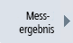
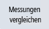
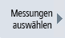
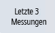

Sie haben die Möglichkeit, sich einen Vergleich der eingespeisten und rückgespeisten Verbrauchswerte von aktuellen und gespeicherten Messungen anzeigen zu lassen.
Voraussetzung
Vorgehensweise
|  | 1. | Drücken Sie den Softkey "Messergebnis". |
|  | 2. | Drücken Sie den Softkey "Messungen vergleichen". Das Fenster "Ctrl-E Analyse: Vergleichen" wird geöffnet. In einem Balkendiagramm werden eingespeiste und rückgespeiste Verbrauchswerte der aktuellen Messung angezeigt. |
|   | 3. | Drücken Sie den Softkey "Messungen auswählen" und wählen Sie die jeweiligen Messungen, die Sie miteinander vergleichen möchten. -ODER- Drücken Sie den Softkey "Letzte 3 Messungen", um sich den Vergleich der 3 zuletzt gespeicherten Messungen anzeigen zu lassen. |
| | 4. | Wenn Sie nur die aktuelle Messung sehen wollen, schließen Sie das Fenster "Messungen auswählen" mit "OK". |